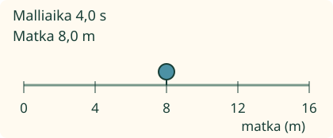
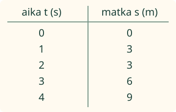

Loikka kokoaa liikkeen mallista saadut aika–matka-parit taulukoksi.
Sama mittaus samalle riville
Kokoan tiedot taulukkoon ja tarkistan ne alkuperäisistä lapuista. Kirjoita sarakkeeseen suure ja yksikkö: aika sekunteina, matka metreinä.

Yhdellä lapulla on 1 s → 2 m. Kirjaa samalle riville 1 ja 2. Seuraavalla lapulla oleva matka ei kuulu tähän mittaushetkeen.
Ilman moduulia: tee sarakkeet aika t (s) ja matka s (m). Kirjaa parit (0, 0), (1, 2), (2, 4), (3, 6) ja (4, 8). Vertaa jokainen rivi alkuperäiseen pariin.
Sama matka voi toistua

Toisessa mallissa merkki pysähtyy hetkeksi. Ajalla 1 s matka on 3 m. Ajalla 2 s se on yhä 3 m. Molemmat rivit kuuluvat aineistoon.
Ennusta: jos vaihdat rivien katselujärjestystä mutta pidät jokaisen aika–matka-parin yhdessä, muuttuuko tieto?
Katso ajatus
Ei. Tietojen yhteys säilyy. Jos siirrät vain matkat eri riveille, tieto muuttuu vääräksi. Säilytä alkuperäiset laput, jotta voit tarkistaa parit.
Uusi aineisto
Uudessa mallissa ajalla 1 s matka on 4 m, ajalla 2 s se on 8 m ja ajalla 3 s se on 12 m. Käytä uusia lappuja. Älä kopioi edellisen mallin matkoja.
Apua taulukon tekemiseen
Nimeä ensin suureet ja valitse niiden yksiköt. A-sarake ja B-sarake ovat työpohjan nimet; valittu otsikko kertoo, mitä luvut tarkoittavat. Voit vaihtaa sarakkeet yhdessä niiden otsikoiden ja lukujen kanssa.
Katso yhdeltä lapulta aika ja sen oma matka. Kirjaa molemmat ja siirry seuraavaan. 0 on oikea lukuarvo; tyhjä solu tarkoittaa, että tieto puuttuu. Merkintä s tarkoittaa ajan yksikkönä sekuntia. Otsikossa matka s (m) sama kirjain s on matkan tunnus, ja m on metri.
Tutki lisää ilman ruutua
Valmistele taulukko ennen opettajan kanssa tehtävää mittausta. Nimeä suureet ja käytetyt yksiköt. Kirjaa jokaisen mittauksen tiedot yhdessä. Säilytä myös alkuperäiset muistiinpanot ja tarkista, ettei yhtään mittausta jäänyt pois.
Opettajalle: prosessi ja näytön rajat
Vuosiluokat 7–9, representation/process. Vaadittu SCI-ENV-DATA-01 säilyy; M-DATA-10 on vahva esitystuki eikä uusi pakollinen portti. Taulukon lukemista tuetaan tässä vaiheittain. Nopeuden laskemista tai yksikkömuunnoksia ei edellytetä. Prosessi on tarkoitus → otsikot → parit → kirjaus → tarkistus.
Kaikki luvut ovat täsmällistä, kuvitteellista malliaineistoa. Yksi malliaika ohjaa liikettä ja siihen mennessä saatuja näytepareja; yksi sekunti toistoa vastaa yhtä mallisekuntia. Askellus etenee sekunnin. 0-rivi kuuluu malliin. Harjoituksen koko lähdelista on saatavilla erikseen ilman katselu- tai muistipakkoa. Mallin katsominen ei muuta vastausta.
Otsikoita ja molempia lukusarakkeita muokataan itse. Tarkistus hyväksyy kaikki samat parit säilyttävät rivijärjestykset sekä sarakkeiden vaihdon yhdessä otsikoiden, yksiköiden ja arvojen kanssa. Toistuva matka eri ajoilla on sallittu; sama mittaushetki kahdesti ei korvaa puuttuvaa paria. Otsikkojen sanamuoto ja välimerkit eivät ole vapaa tekstikoe: työpohjan valinnat tuottavat selkeät suure–yksikkö-otsikot.
Harjoitus tarkistaa annettujen tietojen taulukoinnin tuetussa tilanteessa. Se ei todenna omaa kokeen suunnittelua, mittalaitteen lukemista, fyysistä mittaamista, mittausepävarmuuden arviointia tai itsenäistä koko tutkimusprosessia. Standalone-sivu ei myönnä pelin tukemattomalle prosessiroolille formaalia hallinta- tai henkilönäyttöä. Ei henkilöhistoriaa, tallennusta, vaikuttavuusväitettä tai uutta pelihaaraa.
Lopuksi: mitä tarkistat ennen kuin sanot taulukon olevan valmis?
 Loikka kokoaa liikkeen mallista saadut aika–matka-parit taulukoksi.
Loikka kokoaa liikkeen mallista saadut aika–matka-parit taulukoksi.